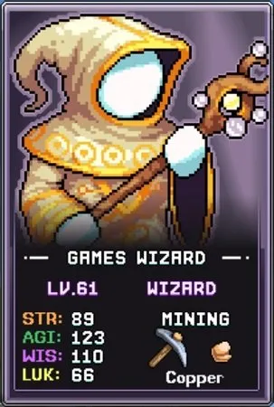
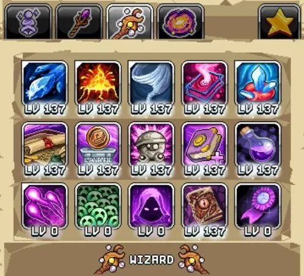
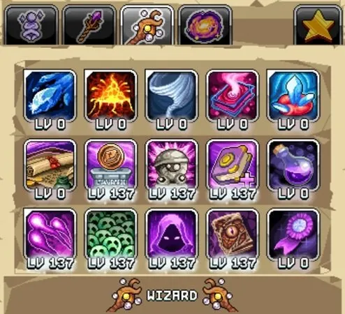

번역 안내. 클래스·스킬·탤런트 이름 등 고유명사는 인게임 검색을 위해 영어 그대로 두었고, 설명만 한글로 옮겼습니다.
이 Idleon Wizard 가이드는 전투와 예배(Worship) 양쪽에 대한 탤런트 템플릿을 제공합니다. 스탬프를 수집하는 전문가로서 Beholder 조각상 부스트 덕분에 높은 치명타 확률에 도달하며, 범위 내 원소 데미지를 극대화하고 World 3 Worship 스킬을 최적화하세요. 이 페이지는 Mage 탤런트 빌드 페이지와 함께 활용해야 최대 효과를 발휘합니다.

전투(Damage) 빌드

데미지 최대화를 위한 Wizard 탤런트 우선순위:
| 탤런트 | 효과 | 설명 |
|---|---|---|
| Floor Is Lava | 화산을 소환해 데미지 | 원거리 공격이 가능한 최고의 공격 스킬로 보스전 등 Active(직접 플레이) 전투에 유용합니다. 최소 1포인트를 투자하고 공격 바에 배치한 후, Speedy Book을 확보하고 나서 맥스하세요. |
| Tornado | 토네이도를 소환해 일정 시간 동안 앞뒤로 이동하며 데미지 | 두 번째로 좋은 Active 공격 스킬입니다. 1포인트 후 나중에 맥스하세요. |
| Ice Shards | 다음 기본 공격이 3회 데미지를 주고 근처 몬스터를 빙결 | Wizard의 Active 공격 탤런트 중 가장 약하며 광역 효과가 없습니다. 1포인트 후 나중에 맥스하세요. |
| Paperwork, Great… | 보유한 스탬프 10개마다 +% 데미지 | 퀘스트와 몬스터 드롭에서 스탬프를 성실히 수집한다면 최고의 Wizard 데미지 원천입니다. |
| Mana Is Life | 받은 데미지의 일부를 MP로 전환하고, 데미지 티어당 +% 멀티킬 | 패시브 멀티킬이 AFK 수익을 높이고 World 3 Death Note 메커니즘의 추가 킬 카운트를 쌓아 줍니다. |
| Fuscia Flasks | Mage Is Best 버블 레벨마다 Overclocked Energy 최대 레벨 증가 | Overclocked Energy는 Wizard 데미지에 큰 부스트를 주지만 사전에 Mage Is Best 연금술 버블을 어느 정도 레벨업해야 하며, 여분의 Mage 탤런트 포인트도 필요합니다. |
| WIS Wumbo | Book of the Wise 최대 탤런트 레벨 + | 여분의 Mage 탤런트 포인트가 있을 때 효과를 볼 수 있는 데미지 원천으로, % 스탯 부스트가 쌓일수록 점점 강해집니다. |
| Earlier Education | Mage 탤런트 탭 포인트 + | Fuscia Flasks 또는 WIS Wumbo의 효과를 극대화하기 위해 Mage 탤런트 포인트가 부족할 경우 투자하는 것이 합리적입니다. |
| Speedy Book | 4초 안에 4킬 달성 시 공격 속도 증가 | Wizard의 다음 클래스 승급인 Elemental Sorcerer 이후 Active 플레이 스타일에서 중요한 탤런트입니다. 맥스 후 다시 공격 탤런트(Floor is Lava, Tornado, Ice Shards)를 맥스하세요. |
| Occult Obols | Obols가 +% 더 많은 WIS 제공 | 장착한 Obols에서 소폭의 지혜(WIS)를 추가합니다. |
| Staring Statues | EXP, Lumberbob, Beholder 조각상이 +% 더 큰 보너스를 제공 | Beholder 조각상(치명타 확률 제공)을 강화해 현재 치명타 확률과 누적 조각상 수에 따라 데미지에 소폭 영향을 줍니다. |
| Nearby Outlet | Worship 충전 속도 + | Worship 충전 속도는 소울 획득 최적화의 시간 제한 요소이므로, 전투 프리셋에서도 여분의 탤런트 포인트가 있다면 투자하세요. |

예배(Worship) 빌드
최적화된 Worship 빌드는 소울이 장비·연금술·스탬프 등 다양한 Idleon 메커니즘에 사용되기 때문에 계정 전반 진행에 중요합니다. 아래 우선순위를 Mage 스킬링 빌드와 함께 활용하세요. Smart Efficiency가 예배 수익에 큰 영향을 미칩니다.
| 탤런트 | 효과 | 설명 |
|---|---|---|
| Charge Syphon | 다른 모든 플레이어의 예배 충전량을 빼앗아 일부를 이 캐릭터에게 부여하고 최대 충전량 증가 | 다른 캐릭터가 생성한 예배 충전량을 소울 생성이 높은 Wizard에게 집중시키는 핵심 탤런트입니다. 단, 다른 캐릭터도 어느 정도 Worship 레벨을 유지해야 새 해골 장비를 해금할 수 있으므로 주의해서 사용하세요. Maestro의 예배 충전량을 먼저 소모한 뒤 이 탤런트를 사용하세요. 최대 소울 수익을 위해 Maestro의 예배 레벨을 Wizard보다 높게 유지해야 Right Hand of Action의 효과가 극대화됩니다. |
| Sooouls | 보관함의 Forest Souls 10의 거듭제곱당 +% 예배 효율 | 저장된 Forest Souls가 많아질수록 강해지는 예배 효율 탤런트입니다. 노력 대비 효과가 좋은 초기 목표로 100만 개를 권장하며, 이후 1000만, 1억, 10억 단계는 그리 큰 노력 없이 추가할 수 있습니다. |
| Nearby Outlet | Worship 충전 속도 + | 추가 충전 속도를 통해 소울 수익을 높입니다. |
| Bless Up | +% 예배 경험치 획득 | 예배를 처음 시작할 때 일부 포인트를 투자하여 더 높은 레벨의 예배 해골 장비를 빠르게 해금하는 것을 권장합니다. 현재 사용 가능한 최고의 예배 해골 장비를 모두 해금한 뒤에는 포인트를 빼서 Maestro의 예배 레벨이 Wizard보다 높게 유지되도록 하세요. |
| Staring Statues | EXP, Lumberbob, Beholder 조각상이 +% 더 큰 보너스를 제공 | 예배 효율에는 직접적인 기여가 없지만, Lumberbob 조각상 부스트가 Wizard로 스킬링할 때 나무 베기 수익을 높입니다. |
| WIS Wumbo | Book of the Wise 최대 탤런트 레벨 + | 지혜(WIS)는 예배와 나무 베기 양쪽에 소폭 기여합니다. |
| Occult Obols | Obols가 +% 더 많은 WIS 제공 | 위와 유사하게 여분의 탤런트 포인트가 있을 때 지혜를 소폭 올려 줍니다. |